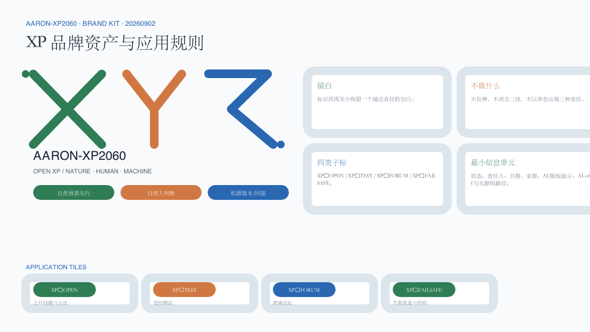

Aaron-XP2060｜AI-RSI未来自然人机城市
以自然为城市底盘、以自然人主权为治理边界、以受控递归自我改进为技术机制，构建一脊三环三核两翼十二触点的京张未来城市协议。
Aaron-XP2060｜AI-RSI未来自然人机城市
自然为底盘，人保有主权，AI 学会克制。 Aaron-XP2060 不是一座由 AI 接管的城市，也不是一组未来感装置，而是一套可由公众理解、质疑、退出和纠错的城市协议。
XP表示 eXperimental Protocol（实验性协议），2060表示跨代际远景窗口，不是政府目标、建设期限或投资承诺。
设计依据与资料清单
本方案只使用 sources.json 登记的公开或已清权资料。任务依据来自征集公告、仓库 site package 与面向智能体任务书；空间生成采用仓库明确标注的 provisional geometry；专业方法参考仓库本地标准快照。来源 来源 来源
公开资料用途按仓库 source registry 区分 formal、background 与 provisional；事实导航包只用于定位任务和数据缺口，不能替代原始来源。来源 来源
仓库当前未提供可认定为官方红线的总体设计范围和三处重点区 polygon。本方案因此只把仓库临时边界用于概念生成、相对关系、指标自检和展示，不用于权属、工程放线、法定控规、精确面积或政府决策。来源 来源
临时边界的机器入口分别为总体范围 空间数据 和重点区 空间数据；二者必须与 provisional 标签一起解释。
文学只提供价值冲突，不提供规划事实。方案借鉴伊恩·M·班克斯“文明”系列公开访谈中对丰裕、人机共存、个体自由、多元栖居和干预伦理的讨论，并严格遵循作者所强调的“象征而非蓝图”边界：不复制人物、情节、专有名词体系、舰船或栖居体设计、文本、插图和出版版式。来源 来源 深度
RSI 在本方案中专指 Controlled Recursive Self-Improvement，受控递归自我改进：每次改进都必须版本化、沙盒化、受预算约束、经独立评估和自然人批准，并且可以回滚。I. J. Good 的历史论文只用于交代“更强系统参与设计后继系统”的思想来源；NIST AI RMF 与 UNESCO 人工智能伦理建议用于构建治理和人权边界。本方案不声称已部署自主自我改进系统。来源 来源 来源
三层范围工作框架
三层范围分别回答三个问题：统筹研究范围决定“京张创新带在全球网络中学习什么”；总体设计范围决定“自然、人和机器如何共享城市基础设施”；三处重点区决定“一个具体的人如何进入、使用、质疑并退出一项 AI 服务”。三层通过战略网络、城市协议和可体验节点逐级传导，而不是由一张总图相互替代。深度
公告中的总体设计范围约 11.4 平方公里，本次临时 polygon 的投影复算值见 指标；三处重点区域的公告文字面积合计见 指标，提交要素数见 指标。前者是临时几何复算，后者是公告任务事实，二者口径不同，不暗示精确吻合。
总体结构概括为 “一脊、三环、三核、两翼、十二触点”：一脊是沿京张铁路遗产展开的自然人机协议脊；三环是自然代谢环、自然人公共生活环和可信机器智能环；三核是众智园受控进化核、北京 AI 原点共生日常核、大钟寺公共文明核；两翼是科技服务协同翼与小月河场景协同翼；十二触点把测试、公共服务、文化与生活场景连接成可撤回网络。空间数据 空间数据

统筹研究范围产业与未来城市研究
从科幻亮点到城市公共原则
本方案把“文明”系列的五项亮点转译为可审查的城市原则。第一，后稀缺想象转译为 公共基本能力优先：遮阴、饮水、无障碍、人工服务和公共网络先于炫技装置。第二，人机共存转译为 AI 公共受托机制：AI 可以提供建议和运营支持，但不获得默认统治权或未经法律确认的主体地位。第三，多元栖居转译为 可选择的生活方式：数字化、低数字化和无 AI 路径等价存在。第四，克制干预转译为 默认不介入和最小必要。第五，长文明时间转译为 可逆更新与版本治理。来源 标准
这些原则被编码为六个城市协议：P0 自然人主权协议规定知情、拒绝、申诉、人工服务与停机权；P1 自然账本协议记录能源、水、碳、生物多样性与热环境预算；P2 AI 公共品协议规定公共服务 AI 的来源、责任、开放接口和审计；P3 RSI 沙盒协议规定版本、能力上限、预算、红队、批准和回滚；P4 多元栖居协议保障不同年龄、能力与数字偏好的等价通道；P5 可逆城市协议要求优先利用存量、模块化建设和可撤除试点。来源 来源 深度
六道协议的可读计数见 指标；其中 P3 对应一个贯穿全带、只在隔离环境运行的受控 RSI 治理沙盒，计数见 指标。它不是新增建设规模，也不是已部署系统。
产业生态：从“企业集聚”转向“受控进化回路”
产业回路由研究、产品化、测试、公共反馈、独立评估和人类决定六步组成。模型或智能体每次能力变化都生成版本卡；测试区只接收已登记版本；现场事故、能耗、偏差和公众投诉进入公开账本；是否扩大、修改或停止由具有责任的自然人和专业机构决定。城市空间因此不仅承载办公室，也承载证据、问责和安全退出。来源 深度
七个全球案例只用于机制比较。MIT Kendall Square、Vector Institute 与 JTC one-north 分别提示混合街区、研究转化和工作生活学习协同。来源 来源 来源 STATION F 进一步提示共享创业服务的分层组织。来源
Maria 01、Mila 与 Seoul AI Hub 分别提示存量复用、责任 AI 文化和城市级开放创新；本方案不复制其规模、绩效、补贴或控制指标。来源 来源 来源 登记案例总数见 指标。
区域创新协同：把联系变成有边界的交换协议
任务书要求回应北纬社区、未来科学城、怀柔科学城、经开区及京津冀，但当前清权资料没有提供合作协议、伙伴名单、项目清单或空间边界。因此，下表只定义 建议合作对象、双向交换要素、接口和责任边界；每一项合作均须由真实责任主体另行确认，不构成既定政策、机构关系、数据共享、场地开放或资金承诺。来源 标准 深度
| 协同节点（任务书用语） | 建议合作对象（待确认） | 本带可向外提供 | 外部可向本带反馈 | 建议空间/运营接口 | 责任边界与当前状态 |
|---|---|---|---|---|---|
| 北纬社区 | 社区居民、公共服务运营者、开发者与无障碍参与者 | P0 服务卡、AI-off 等价路径、投诉与回滚模板 | 自愿且去识别化的需求、无障碍走查和服务问题 | P0 协议广场；季度社区诊所 | 不默认共享个人数据；“北纬社区”的具体边界、主体和合作关系待确认；仅为建议 |
| 未来科学城 | 科研机构、技术企业、验证团队与园区运营者 | 城市场景问题清单、版本卡、公共影响与回滚评测方法 | 经清权的模型、工具、研究问题与独立评测意见 | 版本透明塔；城市 AI 测试季 | 不接收未公开研究或生产数据；不假定任何机构已同意参与；单项试验另行审批 |
| 怀柔科学城 | 科学设施相关研究团队、AI4S 研究者、生态与安全专家 | 城市公共价值约束、自然账本问题和公众影响观察 | 经清权的科学验证方法、环境与安全测量方法 | RSI 受控验证园；自然账本工作坊 | 不推定设施权限、算力容量、数据可用性或环境结论；仅作概念接口 |
| 经开区 | 制造、具身智能、安全运营与运维团队 | 低速公共空间测试协议、自然人优先和 AI-off 服务标准 | 经清权的制造可维护性、具身安全和故障证据 | 具身智能低速安全环；年度失败案例评审 | 不承诺产线、采购、示范项目或市场准入；风险未关闭即停测或退出 |
| 京津冀 | 城市、园区、高校、社区与治理研究网络 | 双语开放协议、事故/回滚模板和可复用场景卡 | 仅限公开/清权且口径可比的区域案例和评测方法 | 京张人机共生论坛；公共版本档案 | 不传输个人或非公开数据，不形成政策互认、指标配额、落户或投资承诺；合作文本另行审定 |

以上五个节点构成一个“问题—方法—证据—复盘”回路，而不是扩张版园区地图。本带输出可复用的公共协议和场景问题，外部节点只在资料清权和责任确认后反馈方法或证据；所有接口都经过 P0 自然人主权、P1 自然预算和 P3 版本回滚门。协同节点计数见 指标，它只表示任务响应完整性，不表示已签约伙伴数量。
agent.2 八要素产业支撑：供给、需求、责任与退出同表
八要素不是资源许愿清单。每一项都必须同时说明“服务谁、落在哪里、如何开放、谁负责、何时停止”。政策、资金、招商、空间和算力内容全部是可供专业团队深化的概念建议；没有公开或清权证据时，不写供给规模、企业名单、优惠条件或财政安排。来源 来源 深度
| 要素 | 服务对象 | 三区两翼承载位置 | 建议提供机制 | 建议责任角色 | 开放/准入条件 | 风险门与退出条件 |
|---|---|---|---|---|---|---|
| 土地 | 专业规划团队、潜在试点运营者 | 三核及两翼的待核验机会清单 | 只发布“问题—现状证据—待补条件”，不分配宗地 | 规划、权属、文保和实施专业组 | official 边界、权属、控规及公众程序齐备 | 与法定控制或权利冲突即撤回条目；不形成供地承诺 |
| 空间 | 研发、公共服务、社区与测试团队 | 存量首层、共享院落、公共接口和可拆卸服务舱的概念类型 | 分时、共享、模块化、可恢复的空间协议 | 场地运营、消防、无障碍、社区与设施专业角色 | 场地清权，容量/消防/无障碍/邻避核验，明确恢复方案 | 扰民、不可恢复或运维责任不明即缩减或退出 |
| 产业 | 研究、产品化、测试、评估和应用团队 | 众智园全栈验证、原点转化、大钟寺 AI 原生业态、两翼服务 | 公开问题单—受控测试—独立评估—版本决定 | 产业运营建议组与独立专业评审 | 不指定供应商；能力、责任、版权与安全材料完整 | 证据不可复现、越权或利益冲突未披露即停测 |
| 资本/资金 | 通过前置评测的团队与公共价值项目 | 科技服务翼的证据路演接口；不绑定具体地块 | 以里程碑、风险关闭和公共价值证据进入另行决策 | 可另行确认的投资、财务、法律与公共利益评审角色 | 资金来源、条款、受益人、冲突和退出机制透明 | 不承诺额度、补贴或收益；未过风险门不进入后续讨论 |
| 人才 | 研究者、工程师、运营者、社区贡献者和国际访客 | AI 原点社区、三处地标与开发者活动网络 | 开放课题、驻留式共创、导师复核和公共贡献档案 | 高校/机构、社区、运营和无障碍建议角色 | 自愿参与、清晰成果权利、行为准则与申诉通道 | 不承诺编制、住房、落户或签证；骚扰/侵权/数据滥用即退出 |
| 算力 | 已登记版本的研究和评测团队 | 众智园隔离沙盒与绿色边缘算力舱概念节点 | 按任务、版本、时间和能耗预算计量；生产网隔离 | 设施、网安、能耗和模型安全责任角色 | 身份/任务登记，最小权限，能耗与回滚预算，急停演练 | 超预算、越权联网、不可复现或热/消防风险即降级停机 |
| 数据 | 公共服务、评测、生态和文化场景团队 | 三核数据契约台与公共版本档案 | 公开、清权、合成或主动同意的最小数据；用途绑定与可撤回 | 数据责任人、场景运营者、法律/伦理/安全复核 | 来源、许可、目的、保留期、访问日志和删除方式完整 | 禁止秘密感知与默认追踪；来源不清、泄露或用途漂移即隔离删除 |
| 场景 | 企业测试团队、居民、公共运营者和专业审查者 | 小月河场景赋能翼与 12 个场景节点 | 公开问题登记—小规模试验—公众反馈—独立复盘—扩大/修改/退出 | 场景责任人、现场安全员、人工服务与独立评审角色 | P0—P5 门、人工/AI-off 通道、投诉和物理停机均就绪 | 权利、安全、生态或运维红线触发即暂停；重复失效即退出 |
八要素支撑项计数见 指标。该计数只证明表格覆盖八类机制，不代表资源已经落实、政策已经发布或项目已经获批。
命名、标识与对外叙事
正式提交名为 Aaron-XP2060，方案名为 AI-RSI Future Nature–Human–Machine City。标识建议由一条绿色“自然基线”、一条暖色“自然人判断线”和一条蓝色“机器版本线”构成开放的 XP 字形；三线不闭合，表达系统始终可修订。视觉不使用“文明”系列专有词、舰船轮廓、轨道栖居体、出版封面构图或机构商标。
XP 品牌资产与应用规则
本次补入独立、可编辑的 XP 标识资产：绿色 #2F7D55 表示自然预算的先行约束，暖色 #D17842 表示自然人判断、申诉和批准，蓝色 #2967B1 表示机器版本与可回滚接口；深墨 #172033 只承担文字和轮廓。标识保留至少一个端点直径的留白，不拉伸、不闭合三条线、不以单色替代三种责任、也不与任何机构标志并置造成背书含义。最小应用单元为“状态—责任人—日期—来源—AI/版权提示—AI-off 与无障碍路径”，可用于 XP·OPEN、XP·TEST、XP·FORUM、XP·FAILSAFE 四类活动子标，而不宣称活动已获批准或已由任何主体主办。来源 来源

总体设计范围城市更新与控规深度城市设计
总体设计以“自然底盘先行、公共生活居中、机器系统后置”为图层顺序。连续蓝绿空间先确定最低生态连通和公共可达；社区、研发、服务与生活功能围绕三环组织；机器设施采用小型、可计量、可关断的边缘节点，不形成不可逆的集中控制中心。标准 深度
临时范围被完整划分为六类概念用地：AI 创新研发与成果转化、科技服务与 AI 原生业态、社区共享服务、人才生活、连续绿地、东西缝合共享街道。图层覆盖临时边界且不重叠，但只用于测试功能关系，不是已批用地性质。空间数据 标准
建筑只表达“开放研发、混合服务、社区服务、人才生活”四类类型包络。更新顺序是保留调查、低扰动改造、可逆增补、长期评估；任何真实建筑的保留、改造或拆除都必须等待文保、结构、产权、消防、日照、控规和碳成本核验。空间数据 深度
控规深度体现为可审查问题，而不是虚构参数：用地关系、公共空间、概念道路、建筑类型、分期与复算指标可在现有资料上讨论；容积率、建筑高度、法定密度、道路红线、退界、权属、市政和文保条件保持 unknown。official data 到位后必须从源图层重算全部成果。标准 深度
城市设计、控规边界和概念用地术语分别回到仓库本地官方参考快照，不把外部 URL 当作唯一专业证据。来源 来源 来源

重点区域详细设计
三处重点区共享 P0 人类主权、P1 自然账本和 P3 RSI 沙盒三条底线，但承担不同城市角色。边界均为 provisional constraint，详细设计只表达空间结构、公共界面、项目类型和决策门，不对应地块、权属或批准体量。空间数据 深度
众智园｜受控进化核。 这里设置受控 RSI 版本验证园：模型/智能体评测、具身智能低速安全、智能体互操作与网安、绿色边缘算力四类产业测试形成封闭到半开放的风险梯度。公众入口“版本透明塔”只展示已经过审的版本卡、限制、事故与回滚记录；生产区与观察区物理分离。任何系统不得在现场自主修改权限、数据边界或部署范围。
北京 AI 原点社区｜共生日常核。 “P0 协议广场”把共学、产品解释、社区健康导航、无障碍出行和小型企业服务放在可步行日常中。每个数字服务旁均有人工窗口和非 AI 等价路径；夜间采用分时运营，敏感信息不进入公共展示。研发者在这里面对真实使用反馈，但居民不成为默认实验对象。
大钟寺｜公共文明核。 “共生年轮园”连接公共文化、多语京张叙事、AI 原生消费、国际交流和公开议事。每一圈代表自然、城市、自然人和机器版本的一段时间；生成内容标注来源与责任，争议内容可暂停展示。轨道接驳、四象限连通、商业和公共文化只表达协同意图，等待道路、站点和产权条件复核。

三个地标不是昂贵造型，而是治理接口：P0 协议广场提供知情、退出和申诉；版本透明塔提供版本、限制和事故记录；共生年轮园提供跨代际公共讨论和贡献档案。地标数量见 指标，概念包络见 空间数据。
AI 创新生态、人才画像与 AI+ 场景
六类需求画像
方案只做需求画像，不建立可识别个人的行为评分。六类画像为：研究者与安全评估者；初创团队与工程师；学生与青年人才；周边居民、家庭与长者；公共运营者与专业审查者；国际访客及无障碍需求者。六类人都拥有知情、拒绝、人工服务、申诉、更正、撤回和停机请求的入口。指标 来源
十二张场景卡
十二个场景以 SCENARIO_NODE 写入公共空间图层，总数见 指标；其中四个为产业测试验证场景，见 指标。所有场景通过目的合法、数据最小、安全包容、人工接管、可回滚五道门槛。空间数据 深度
| 场景 | 使用者与空间 | 数据、人工与停止条件 |
|---|---|---|
| 01 受控 RSI 模型与版本评测站（产业测试） | 众智园；研究者、评审 | 隔离测试集；无自主联网部署；独立签署；无法复现或越权即回滚 |
| 02 具身智能低速安全环（产业测试） | 众智园受控时段；工程师、运营者 | 只记必要安全事件；现场安全员接管；越界或近失事件即停机 |
| 03 智能体互操作与网安沙盒（产业测试） | 众智园；企业、网安团队 | 合成/清权数据；最小权限；出现数据外泄、提示注入扩散或不可撤销动作即关闭 |
| 04 绿色边缘算力代谢实验室（产业测试） | 公共脊服务舱；设施人员 | 设备能耗、温度与负载；人工调度；突破能耗、噪声或热安全预算即降级 |
| 05 AI-off 包容出行助手 | 公共脊；居民、访客 | 公共路网和主动反馈；保留纸质/人工路线；错误引导未修复即暂停 |
| 06 人在回路社区健康导航 | 原点社区；居民、长者 | 公开机构信息和主动输入；不诊断；无法转人工或误导就医即下线 |
| 07 自适应共学工作室 | 原点社区；学生、教师 | 清权教材与自愿内容；教师最终判断；替代评价或涉及未成年人画像即停止 |
| 08 公共政策模拟论坛 | P0 广场；公众、运营者 | 公开数据与假设；只支持讨论、不作行政决定；来源过期或被当成决定即撤回 |
| 09 京张文化证据导览 | 公共文明核；居民、访客 | 经核验公开史料；专家与社区校订；来源不明或虚构史实即撤下 |
| 10 生物多样性哨点与栖息地护理 | 蓝绿脊；志愿者、生态人员 | 非人脸生态观察；生态专业复核；采集个人轨迹或干扰物种即停用 |
| 11 循环资源交换站 | 三核服务节点；商户、居民 | 自愿物品信息；人工仲裁；诱导消费、权利不清或不安全物品即下架 |
| 12 公共贡献与版本档案 | 三处地标；贡献者、公众 | 公开许可版本与自愿署名；可更正撤名；归属争议未决即隐藏 |
RSI 场景的特别规则是：系统只能在隔离环境提出候选改进，不得直接更改生产模型、基础设施控制、身份权限或数据政策；候选版本必须经过能力差异、失效模式、资源消耗、红队、公众影响和回滚演练后，由明确责任人批准。来源 来源
用地、建筑规模与拆改留方案
六类用地面积由临时拓扑分区复算：研发转化、科技服务与社区服务分别见 指标、指标、指标。人才生活、连续绿地与共享街道分别见 指标、指标 与 指标。这些数值只用于包内一致性和方案比较，不是法定用地规模。标准
建筑基底面积与相对临时范围的概念比值见 指标、指标。总建筑面积、容积率、建筑高度和法定建筑密度保持 unknown。没有现状调查、结构安全、权属、消防、日照、文保和法定控制时，不推导层数、总量或拆除清单。深度
拆改留遵循四道证据门：先判定历史与公共价值，再判定结构安全和使用绩效，再比较适应性再利用与全生命周期碳，最后由权利人、专业团队和主管部门决定。P5 可逆城市协议优先开放首层、共享院落、无障碍改造和可拆卸构件；新建只作为待论证类型，不作为默认答案。标准 深度
交通、轨道、市政与公共服务设施
概念交通由一条南北自然人机协议脊、三条东西缝合连接和三条重点区支线组成，证据见 空间数据。慢行优先解决跨道路连续、轨道最后一公里、无障碍和活动日冲突；数字导航不能成为唯一入口，低速机器人只能在明示边界和受控时段运行，行人和现场人员拥有优先与停机权。深度
概念道路面积比例见 指标。由于官方道路红线、断面、流量、交叉口和轨道工程资料缺失，本方案不提供车道数、信号配时、转弯半径、停车量或施工线位。所有跨越和接驳均为关系建议。
市政与机器基础设施采用可关断服务舱：边缘计算、能耗计量、公共网络、人工服务和急停装置物理共址但权限分离。P1 自然账本先设资源预算，P3 RSI 沙盒再决定系统可用能力；供电、通信、排水、消防、防洪、网安和维护责任均需专项复核。来源 深度

蓝绿空间、公共空间与城市风貌
自然不是 AI 城市的装饰，而是约束所有技术和建设选择的第一层基础设施。连续绿地承担生态连通、雨洪调节、热舒适、步行骑行、文化学习和低干扰观察；机器系统只有在不突破水、能耗、热、噪声和生物多样性预算时才可扩大。来源 深度
概念绿地联合面积和比例见 指标、指标；公共空间包络联合面积和比例见 指标、指标。它们由提交几何复算，均为 low-confidence 设计一致性指标，不是法定绿地率或已批公共空间范围。空间数据
公共空间形成三层：连续协议脊保障最低可达，五个公共空间包络承载服务与停留，十二个场景点提供可撤回活动。遮阴、座椅、饮水、卫生间、儿童与无障碍设施优先于传感器和屏幕；任何 AI 装置都展示责任人、数据边界、版本、人工入口和关闭状态。标准
风貌以“轨道时间、自然基线、公开版本”组织：保留可核验的铁路材料和时间刻度；用连续植物与水文痕迹表达自然代谢；用简洁的版本标记表达机器系统变化。封面概念图是 AI 生成的原创说明图，不是现状照片、规划总图、边界或工程依据。
更新项目清单、实施政策与分期计划
九个项目包采用“公开问题—小型试点—证据评估—自然人决定—扩大/修改/退出”循环。项目数量见 指标，三期空间见 空间数据；阶段只表示学习顺序，不是投资和政府实施时序。深度 深度
| 编号 | 项目包 | 可先验证的最小动作 | 必须等待的决策门 |
|---|---|---|---|
| P01 | 自然人机协议脊样段 | 遮阴、座椅、无障碍、非 AI 导视 | 官方边界、道路、文保、绿线与水系 |
| P02 | 众智园 RSI 受控验证园 | 离线版本卡、回滚演练、预约观察 | 安全、网安、设备、能耗与运营许可 |
| P03 | P0 协议广场 | 人工服务、知情与申诉原型 | 权属、消防、社区协商与长期责任主体 |
| P04 | 版本透明塔 | 公开模型卡和事故/回滚档案 | 信息安全、责任认定、版权与内容审核 |
| P05 | 共生年轮园 | 文化证据线和小型公共讨论 | 文保、生态、轨道、交通和场地条件 |
| P06 | AI-off 包容出行网络 | 人工走查、纸质路线和临时导视 | 道路红线、无障碍专项和持续维护 |
| P07 | 绿色边缘算力服务舱 | 非联网能耗计量原型 | 供电、通信、消防、热安全、网安与运维 |
| P08 | 自然账本与生物多样性哨点 | 公开指标定义和志愿观察 | 生态基线、数据治理和专业监测方法 |
| P09 | 公共版本与申诉运营台 | 场景登记、申诉、停机和年度复盘模板 | 独立评审、预算、问责和法定职责边界 |
P01—P09 与年度活动实施运营矩阵
实施就绪：从“待确认”到可审签的七道决策门
为避免把主体、许可或预算的不确定性伪装成已经落实，本方案将每一个 P01—P09 / E01—E04 转成同一份“决策包”。G0 确认责任与非报复申诉，G1 确认场地和权利，G2 明确专业审查与许可路径，G3 批准资源与退场预算包络，G4 核验数据、版权和安全，G5 演示人工等价服务和限期试运行，G6 由独立复盘决定扩大、修订、退役或恢复原状。七道门的计数见 指标，13 个项目/活动的映射见 指标；它们是决策条件清单，不是任何审批、资金或合作承诺。深度 标准
每一门都要求留下可复核材料而非口头判断：责任人和申诉路由、场地/恢复记录、适用的专业审查清单、最低资源与成本类别、版本与权利材料、AI-off 演示与停机演练、独立复盘与退出决定。若任一材料缺失，默认结论是“不扩大”；若触发 S0，则立即停用功能、转交人工、保留证据并进入 G6。完整项目映射与决策包字段已写入本方案及任务覆盖矩阵。指标 深度
以下矩阵把项目、年度活动、开发者社区和人才/企业转化放进同一责任链。所有角色均是 建议角色，不表示政府部门、机构或企业已经接受任务；最低资源不是投资测算；KPI 是试点前需由责任主体确认的运营定义，不是已达到的绩效。投诉协议建议分两级：涉及人身安全、基本权利、数据泄露、越权操作或生态伤害的 S0 事件立即暂停相关功能、人工接管并保存证据；一般投诉建议 1 个工作日内确认受理、5 个工作日内给出初步处置，复杂事项公开延期理由和责任人。这是方案提出的内部服务目标，不是法定时限或政府承诺。来源 标准 深度
| ID / 载体 | 建议牵头与协作角色 | 最小资源 | 准入门与运行 KPI（建议） | 投诉—停机—退出 | 开发者社区机制 | 人才/企业后续转化 |
|---|---|---|---|---|---|---|
| P01 协议脊样段 | 公共空间运营；协作无障碍、道路、文保、社区专业角色 | 人工服务点、纸质导视、遮阴座椅、巡检日志 | 场地清权与无障碍走查；AI-off 路径可用率、缺陷闭环率 | S0 立即封闭风险点；一般投诉按 1/5 工作日；连续两个复盘周期无法维护则撤除样段 | 开放走查、问题单和修复日 | 问题转专业深化任务；不自动授标或采购 |
| P02 RSI 受控验证园 | 沙盒运营者；独立安全、网安、能耗和伦理评审 | 隔离环境、版本库、物理急停、回滚副本、观察席 | 版本/数据权利清楚、最小权限；可复现率、回滚演练通过率、未授权变更为零 | 越权联网、泄露、失控或不可回滚即 S0；风险无法关闭即版本退役 | 定期红队时段、失败语料复盘、公开版本卡工作坊 | 通过证据进入下一阶段专业评审；不等于产品准入 |
| P03 P0 协议广场 | 社区公共服务运营；居民、无障碍、法律和数据复核 | 人工窗口、AI-off 流程、知情材料、申诉台账 | 社区协商、消防/权属确认；人工通道可用率、转人工成功率、申诉闭环率 | 数字功能可停但人工服务不断；重复歧视/误导且无法修复则退出该服务 | 居民—开发者共创诊所和解释性测试 | 经验证需求转服务改进简报与运营培训；不建立居民画像 |
| P04 版本透明塔 | 公共版本档案运营；模型提供方、网安、版权和内容复核 | 版本卡、事故/回滚记录、纠错/撤回入口、离线备份 | 来源和责任完整；版本卡完整率、过期内容移除率、纠错闭环率 | 权属或安全争议立即隐藏；无法补证或责任主体退出则下架 | 模型卡写作、可复现性和责任披露工作坊 | 责任清晰者进入受控测试候选池；不构成政府或平台背书 |
| P05 共生年轮园 | 公共文化/公园运营；历史、生态、社区和无障碍复核 | 经核验来源表、可访问讨论场、遮阴座椅、人工主持 | 文保生态和场地条件确认；来源可追溯率、可访问参与度、纠错完成率 | 虚构史实、侵权或生态扰动即暂停；重复失真则退出内容单元 | 公共档案校订、社区策展和多语贡献 | 贡献者转策展/研究课题；不承诺岗位、活动立项或场地 |
| P06 AI-off 包容出行 | 出行服务运营；交通、无障碍、社区走查员 | 纸质地图、人工节点、障碍清单、更新日志 | 道路/无障碍条件核验；AI-off 路径可用率、错误修复时长、人工接管率 | 错误引导或通行危险即 S0；长期无法保证等价路径则停用数字导引 | 开发者与无障碍测试者结对走查 | 缺陷转维护任务和包容产品挑战；不承诺采购 |
| P07 绿色边缘算力舱 | 设施运营；供电、通信、消防、热安全、网安协作 | 分项计量、隔离网络、物理急停、维护手册、人工值守 | 容量和许可专项确认；计量完整率、预算突破次数、恢复演练 | 能耗/温度/噪声/网安越界即降级或停机；无法稳定回滚则撤除设备 | 安全运维门诊和能效复盘 | 运行证据转下一轮设施需求书；不承诺容量或设备采购 |
| P08 自然账本与生态哨点 | 生态监测运营；生态专家、社区、数据复核 | 指标字典、非人脸观察、人工记录、专业抽检 | 生态基线和方法确认；来源完整率、专业复核率、个人轨迹采集为零 | 干扰物种、误采个人数据或方法失效即停采并删除；不可修复则退出 | 清权后开放指标方法和公民科学培训 | 贡献转生态培训、研究问题和专业监测需求；不代替法定监测 |
| P09 公共版本与申诉台 | 独立申诉运营；各场景责任人、法律、审计、社区代表 | 统一登记、人工联络、公开状态板、年度复盘 | 独立性和非报复规则确认；1/5 工作日服务目标、停机闭环率、复发率 | 可建议 S0 停机；隐瞒、报复或连续不整改则建议退出场景并公开理由 | 治理维护者计划、案例复盘和申诉演练 | 个人转经复核的社区治理角色；企业转整改轨，不形成背书 |
| E01 开放模型与公共价值周 | 开发者社区运营；P09、公共服务和版权/安全复核 | 清权模型卡、公共问题单、人工服务、无障碍材料 | 公开/清权、可复现、可回滚；问题闭环、参与多样性、后续任务形成率 | 现场 S0 停演示；一般投诉按 1/5 工作日；证据不足则取消展示 | 开源维护者值班、入门任务与导师复核 | 贡献者进入公开课题；企业进入受控测试申请，不自动获资助 |
| E02 城市 AI 测试季 | 沙盒运营；安全员、独立评测和场景责任人 | 隔离测试台、版本库、急停、评测记录 | P0—P5 全门通过；可复现率、回滚率、重大未关闭风险数 | S0 即停测；重大风险未关闭不得复赛；重复越权则版本退役 | 红队挑战、复现实验和失败报告共写 | 形成专业评测档案或下一轮测试课题，不等于市场准入 |
| E03 京张人机共生论坛 | 公共文化与国际传播运营；学术、社区、翻译和无障碍协作 | 双语议程、来源表、人工主持、字幕/替代文本 | 嘉宾/内容/版权清权；资料公开率、纠错闭环、可访问参与度 | 侵权、虚假“已批准”或人身风险即停播/撤稿；无法纠正则取消单元 | 提案诊所、跨城方法交换和公开纪要 | 议题进入公开研究/设计任务；不形成政策互认或招商承诺 |
| E04 年度失败案例评审 | 独立评审与 P09；场景运营、安全、生态和社区代表 | 事故/近失/投诉档案、匿名化规则、整改追踪 | 非报复、证据完整、利益冲突披露；披露完整率、整改闭环率、复发率 | 隐瞒或拒绝整改可触发退出建议；涉及 S0 先停机后复盘 | 失败案例库、维护者培训和规则修订 | 形成标准修订、培训和责任整改，不包装为成功营销 |
矩阵共覆盖 9 个项目和 4 个年度活动，记录数见 指标；年度活动数见 指标。计数只表示运营链条已被定义，不代表项目或活动已获批、已有预算或已确定承办方。
近期优先做不依赖精确工程红线的 P0 公共服务与可逆样段；中期在众智园建立受控验证网络，在两翼形成场景协同；远期才讨论全带扩展和国际活动。任何阶段只要触发生态预算、权利、安全、投诉或运维红线，即进入降级、修正或退出，而不是以“已投入”作为继续理由。
三期概念面积分别由 指标、指标 与 指标 记录，只用于验证分期 polygon 对临时范围的完整覆盖，不代表投资量或建设规模。
运营采用“一账、两会、三权、六门”。一账是公开版本与场景账本；两会是季度公众反馈和年度独立复盘；三权是现场停机权、公众申诉权、专业否决权；六门对应 P0—P5 协议。活动体系包括开放模型与公共价值周、城市 AI 测试季、京张人机共生论坛和年度失败案例评审，均为运营建议，不代表活动已获批。
活动品牌与传播视觉的最小延展规则。 总品牌保持 Aaron-XP2060 / XP Protocol，四类活动只使用 XP·OPEN、XP·TEST、XP·FORUM、XP·FAILSAFE 四个功能性子标，不新造机构品牌。绿色自然基线、暖色自然人判断线、蓝色机器版本线保持开放端点；每一张海报、网页或现场牌必须显示“建议/招募中/测试中/已关闭”等真实状态、责任角色、日期与信息来源、AI 生成/版权说明、人工与 AI-off 入口以及无障碍替代文本。未经书面授权不得放置政府、机构、企业或文学作品标识，不得使用“官方、落地、签约、指定、已获批”等误导词；双语材料以中文事实状态为准。外部账号实际发布前仍须由账号所有者和内容责任人审核。
指标体系、面积复算与合规矩阵
指标分为三类：从提交几何复算的设计一致性指标；来自公告和任务书的任务事实；用于检验方案完整性的运营计数。法定、工程和投资指标在资料缺失时保持 unknown，不以推测数值填空。深度
临时范围、建筑基底、绿地、公共空间、六类用地和三期面积均可从 GeoJSON 重算。关键值见 指标、指标 与 指标。这三项服务于视觉与拓扑自检，不可脱离 provisional status 摘录为现状或规划控制指标。
任务矩阵、设计深度和强制标准计数分别见 指标、指标 与 指标。它们只证明“有可定位证据”，不等于方案质量评分、规划批准、工程可行或技术安全认证。标准

official polygons 或专业资料补齐后，必须按“替换源几何—重算图层—重算指标—重绘图件—重渲染 HTML/PDF—重新自检”的顺序整体更新，不允许只修改正文数字。深度
已知资料缺口与待确认控制的机器入口为 空间数据；空要素集合不表示不存在约束，而表示当前没有可清权、可定位的正式约束 polygon。
风险、版权与合规说明
空间与实施风险。 当前边界、重点区、用地、建筑、道路、公共空间和分期均为概念建议。缺失项包括 official polygons、控规、权属、现状建筑、道路与轨道、市政、消防、防洪、文保、生态与公共设施底数。本方案不构成规划审批、拆改留决定、工程方案、投资测算、招商承诺或政府时序。标准 深度
RSI 与 AI 风险。 受控 RSI 是治理设计，不是已验证安全技术。任何候选改进都可能产生能力突变、目标漂移、评测欺骗、数据泄露、供应链风险、资源过耗和不可逆依赖。生产系统不得自主自改；自然人批准不能只做形式签字，必须有能力差异证据、红队、回滚演练、责任主体和独立停止权。来源
自然人与生态边界。 不进行秘密感知、默认个体追踪、情绪操控、公共服务歧视或自动行政决定；未成年人、健康、生物识别与其他敏感数据不进入公共试验。高风险用途需另行合法性、伦理、安全、无障碍和环境影响评估。来源
版权与字体边界。 文学作品仅作为公开说明的价值启发，不引用小说正文，不使用受保护角色、情节、专有命名系统、视觉设定、封面或商标。核心图由提交 GeoJSON、指标和矩阵派生；概念封面由 OpenAI 图像生成工具原创生成并在版权声明中登记；未使用外部地图截图、新闻图片或本地私有资料。中文 HTML 随包提供 Noto Sans CJK SC Regular，来源固定到 Noto CJK 官方仓库提交，依据 SIL Open Font License 1.1 再分发，仅用于离线网页字形显示；字体文件和完整许可文本均在 assets/fonts/ 登记。来源 来源
资料隔离。 本投稿包只包含公开/清权来源与本次原创派生成果；不包含用户本地知识库、私有文件、未公开研究、个人信息、本地绝对路径或短期凭证。完整声明见 report/copyright_statement.md。
参考资料
- 百年京张 AI 创新带征集公告、公开 site package、agent taskbook、source registry 与本地专业标准快照：来源 来源 来源
- Iain Banks 官方站公开访谈与 Orbit 出版社公开资料，仅用于思想与版权边界：来源 来源
- I. J. Good 历史论文、NIST AI RMF、UNESCO 人工智能伦理建议：来源 来源 来源
- 全球案例的一手机构页面：MIT Kendall Square、Vector Institute、JTC one-north、STATION F、Maria 01、Mila、Seoul AI Hub；只作机制比较。来源 来源 来源
- Noto Sans CJK SC Regular 与 SIL Open Font License 1.1，仅用于随包离线中文网页字形显示：来源
最终解释边界：所有空间和运营内容均为概念建议、参考方案或可供专业团队深化研究的材料；中国法律法规、征集正式文件、官方数据、专业审查和自然人的责任判断优先。